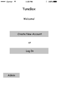
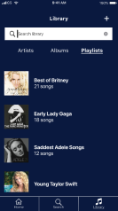

Roles: Research, UX/UI Design, Branding and Identity
Tools: Google Forms - User survey
Deliverables: Link to all TuneBox deliverables - style guide, logo and branding iterations, wireframes, high-fi mockups
User Survey
The journey developing TuneBox started the good old fashioned way: with a survey! I wanted to learn about users’ current habits and opinions when it comes to music streaming. I tested between 25-30 people, utilizing my own social pool, various Slack channels, and the Reddit survey forum to find subjects.
95% currently use a music streaming service
60% use that service every day
Most imporant features were “huge music library” and “creating playlists”
Competitive Analysis
Link to competitive analysis
I wanted to see which aspects of Spotify, Amazon, and Apple Music were the most valuable for users. The standout feature from Spotify was the option for free service, which I felt was vital to maintain the inclusivity and accessbility of TuneBox’s design. Reading reviews of all three platforms, it was clear that users found Spotify’s layout and structure easiest to use. The layout of the dashboard, search results, and location of menu buttons helped inform the best and intuitive design for TuneBox. In terms of brand recognition, Apple and Amazon have a massive leg up, as providers of so many other services that people depend on. So, the idea was hatched to use that brand recognition by incorporating those brands in the TuneBox platform. Tunebox = vessel and organizational tool.
Personas
The user personas I developed represented a diverse group of potential TuneBox users of different age groups. They expressed the various ways TuneBox could enhance users’ music streaming experience.
User Stories + Flows
I wrote numerous user stories and basic task flows, which I then expanded into Draw.io user flow diagrams that I could use as a guide during the design phase. Developing these flows helped me identify which features were necessary to include in my design.
Sketches + Wireframes
I took my research and user flows and made some preliminary design sketches, focusing on the primary features highlighted in my user stories. Then I translated those sketches into low-fi wireframes and an InVision prototype to start initial usability testing.

Brand + Identity
I used key words and image inspiration to develop TuneBox’s brand voice and identity. I wanted the branding to exude the vibrance and excitement of the music we stream, while also communicating the sleek dependability of the design. The goal was for users to feel the excitement of TuneBox, but also know that they could rely on it for seamless, intuitive service.
High-Fi Mockups
I designed high fidelity mockups with Figma, using my branding choices and wireframe structures as guides. All design choices were made to follow Apple’s Human Interface Guidelines.
Log In / Sign Up:
Music Search / Selection:
Playlist Creation / Maintenance:

Prototype
I created a clickable prototype with InVision that I used to test and receive feedback from potential users.
User Testing
I did user tests both in person and via screen-sharing video chat, watching as the subjects navigated the prototype and gave their feedback on the usability and intuitiveness of the design. This led to several valuable changes including eliminating an erroneous billing address input and redesigning the “Create Playlist” pop-up window.
Conclusion
This project did an excellent job revealing to me the areas of design where I knew the most and the areas where I could deepen my knowledge. I was most confident going into the research and planning phase of the project; doing user surveys, performing a competitive analysis, and creating user personas. Once I got to the user stories, I feel that I got a little carried away with what I thought one app could accomplish. I saw all the features that other platforms contained, like sharing things on social media and uploading original content, but had to realize that keeping my list of essential functions as short as possible made the app buildable. This lesson taught me a lot about making realistic goals for the amount of time and support you have available.